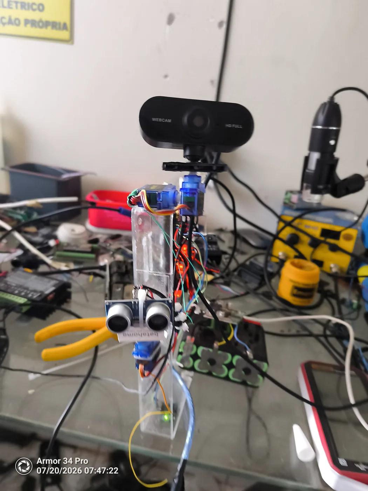
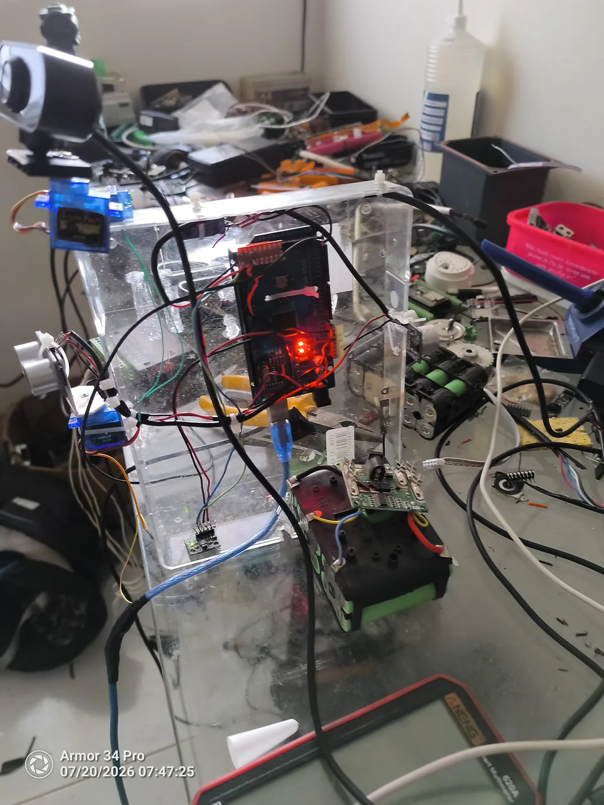
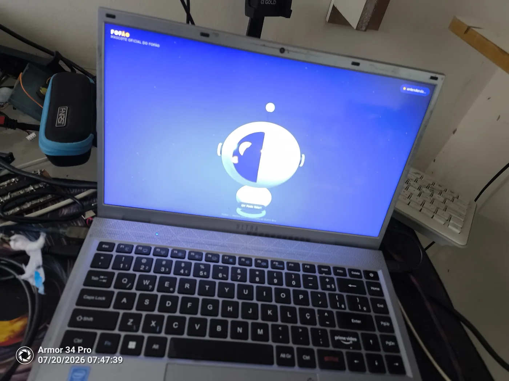

Tres computadores em corrente: cada um so fala com o vizinho.
NotebookMission Core — visao, voz, o rosto
Raspberry Pi 4BMotion Core — kernel e decisao
Arduino MegaFirmware — motores e sensores
O bicho montado

A torre: webcam sobre o pan/tilt de dois servos e o HC-SR04 frontal logo abaixo.

Por dentro: o Mega no chassi de acrilico, servos, ultrassom e o driver dos motores.

O rosto do Fofao rodando no notebook - a mesma tela que vai montada no robo.O diario, do mais novo ao mais antigo
- 2026-07-20
perfil do GitHub e capas
- 2026-07-20
blog: ilustracoes e as primeiras fotos do hardware
- 2026-07-20
blog publico do projeto no GitHub Pages
- 2026-07-20
Camada 2 da cognicao: o diario - e a licao de testar os DOIS lados
- 2026-07-19
Fechamento da sessão
- 2026-07-19
Limiar de impacto: instrumentado, nao adivinhado
- 2026-07-19
behavior.reduzir_carga_ia: alguem finalmente escuta
- 2026-07-19
Falso positivo de heartbeat no boot
- 2026-07-19
Heartbeat por enlace: paciencia com o Notebook, rigor com o Mega
- 2026-07-19
Vazamento de conexoes TCP: causa e conserto
- 2026-07-19
Teste ao vivo do conselheiro: DESLIGADO, e por que
- 2026-07-19
Conselheiro plugado no maestro - a IA opina, a regra manda
- 2026-07-19
Camada 3: IA aconselha, regra manda
- 2026-07-19
Grounding: a correcao real da alucinacao + troca para gemma3:1b
- 2026-07-19
Serial 3000/3000; comparacao de modelos de IA
- 2026-07-19
Bateria + integracao cognitiva: modelo de mundo
- 2026-07-19
CAUSA RAIZ das respostas perdidas: o DHT fantasma
- 2026-07-19
Teste do MPU6050 - sensor ok, offset de 9.3 graus
- 2026-07-19
Sentinela de visão - rosto desconhecido dispara alerta
- 2026-07-19
família cadastrada - Fofão conhece os donos
- 2026-07-19
Atender plugado - maestro reage ao "Fofão"
- 2026-07-19
primeiros comportamentos plugados no maestro
- 2026-07-19
Behavior Core + resiliencia do link Notebook<->Pi
- 2026-07-19
Fase 7 conferida e validada - navegacao pronta menos autocalibracao
- 2026-07-19
faxina do firmware - flags de diagnostico removidos
- 2026-07-19
git remote Pi->Notebook - fim do scp artesanal
- 2026-07-19
Mission Planner ligado - Fase 6 fechada na integracao
- 2026-07-19
banco de dados vivo no SSD + primeira memoria do Fofao
- 2026-07-19
VAD: escuta do Fofao ficou ~20x mais barata
- 2026-07-19
MARCO: cadeia completa viva - Notebook -> Pi -> Arduino
- 2026-07-19
motores de passo giraram pela primeira vez
- 2026-07-19
teste ultrassom apos religar no 5V do Arduino
- 2026-07-18
fechamento - cerebro novo, wake word fuzzy e conversa validada pela familia
- 2026-07-18
madrugada - ajustes de conversa ao vivo com a familia testando
- 2026-07-18
noite - Fofao na TV e PRIMEIRA CONVERSA DE VOZ COMPLETA!
- 2026-07-18
noite - diagnostico de software cravou a causa dos ultrassons: ECHO flutuando
- 2026-07-18
fechamento da sessão - pinagem dos ultrassons confirmada correta, ainda sem sinal
- 2026-07-18
continuação - motores e ultrassons chegaram fisicamente
- 2026-07-18
primeiro teste do pan/tilt no hardware físico + bug real no firmware + investigação de brownout
- 2026-07-17
correção do achado do MonitorHeartbeat + bug de import circular
- 2026-07-17
marco — sistema inteiro rodando de ponta a ponta pela primeira vez
- 2026-07-17
Fase 8, continuação — Configuração: as 5 páginas completas
- 2026-07-17
Fase 8, continuação — Diagnóstico e Conversa
- 2026-07-17
Fase 8, continuação — Mapa polar do radar
- 2026-07-17
Fase 8, continuação — Dashboard web do Raspberry
- 2026-07-17
Cap 12 s.8 - Fusão de Sensores / motion.position
- 2026-07-17
fechando o item 3 da Fase 7 - flakiness do ACK
- 2026-07-17
aparte — Pi Connect caindo, não é do ORION OS
- 2026-07-17
Fase 7, início — Motion Core / Navegação
- 2026-07-17
Fase 8, continuação — validado ao vivo no Notebook
- 2026-07-17
Fase 8, início — Avatar/Sentinelinha
- 2026-07-17
Fase 6
- 2026-07-17
Fase 5
- 2026-07-17
continuação
- 2026-07-17
Sessao de 2026-07-17
- 2026-07-16
Sessao de 2026-07-16